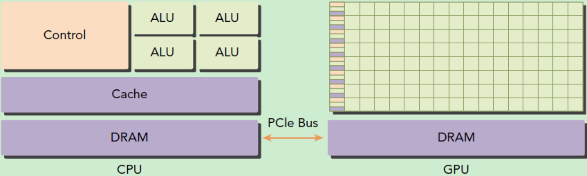
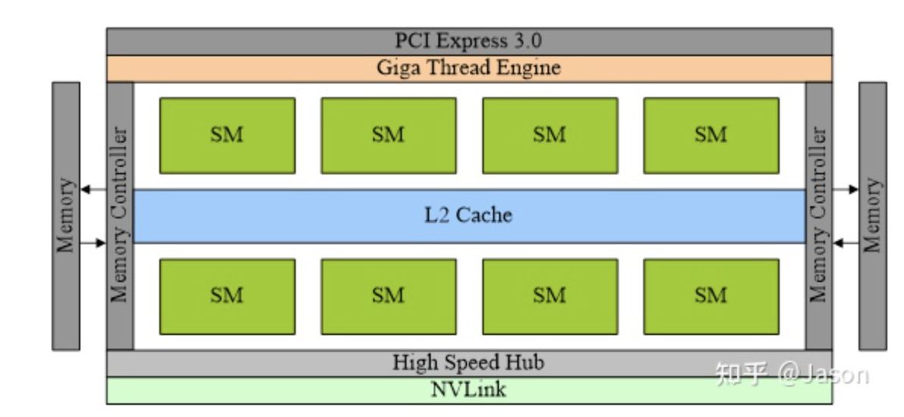
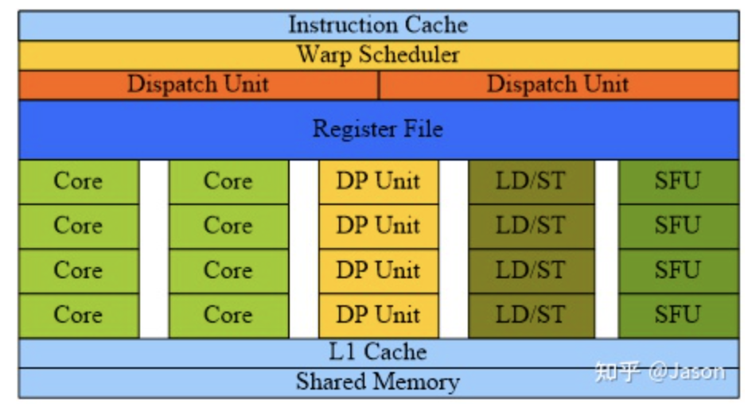
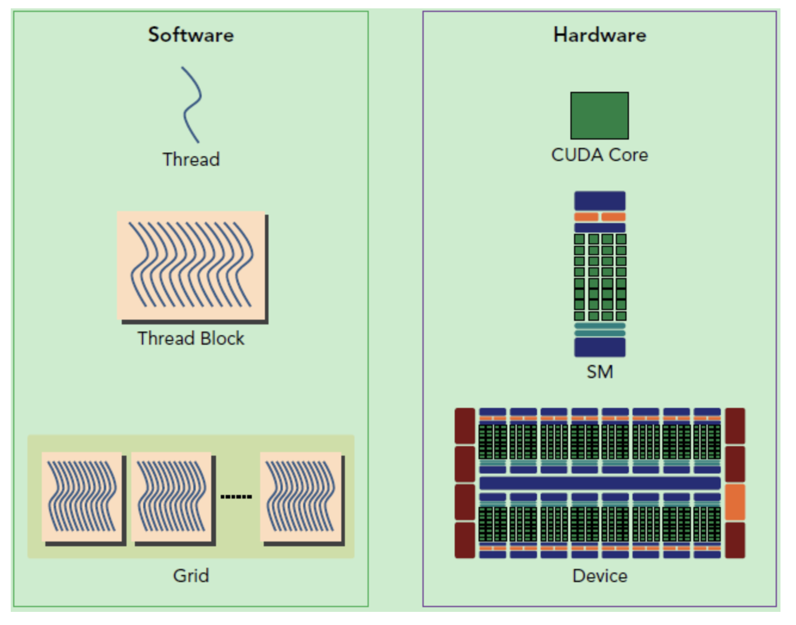
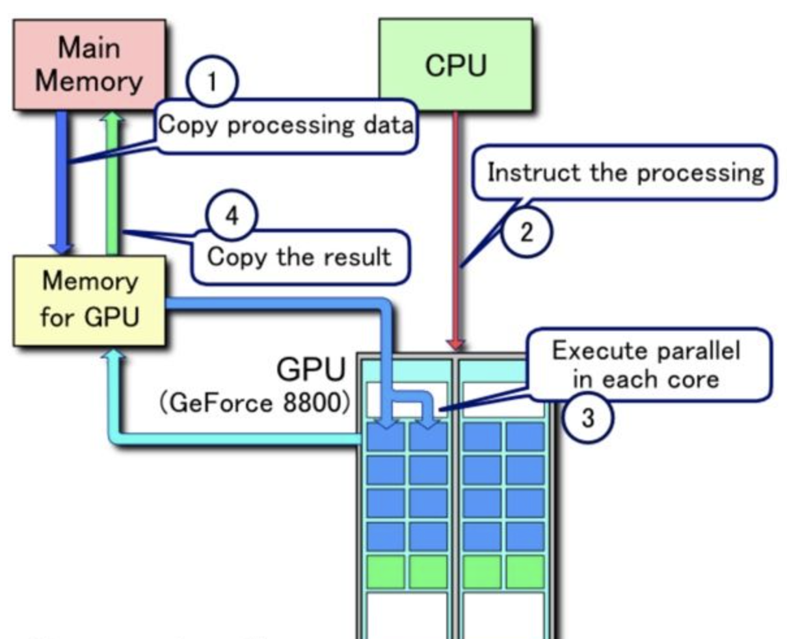
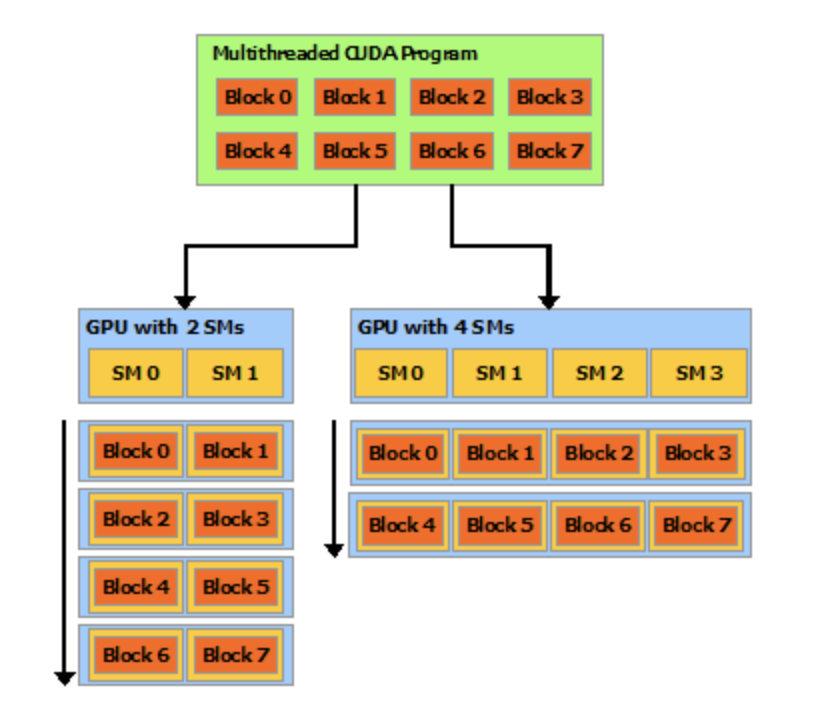
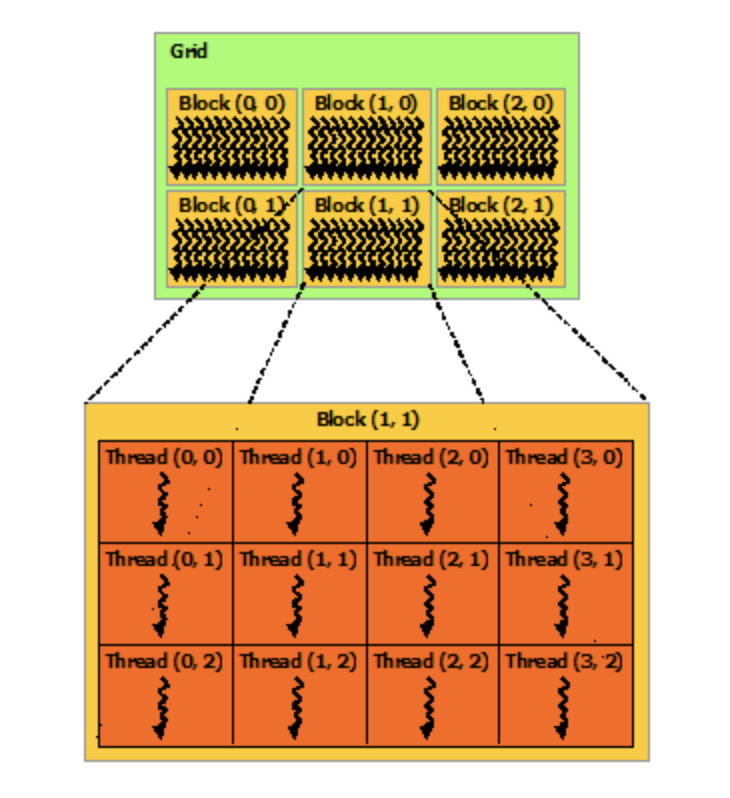
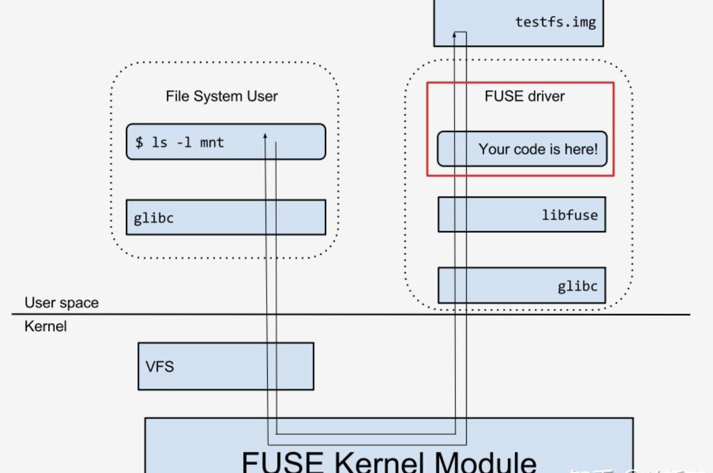
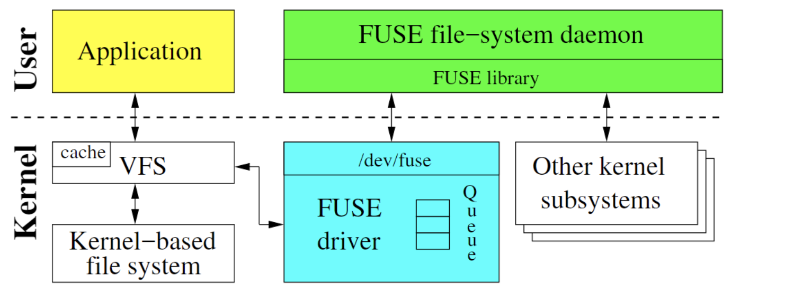
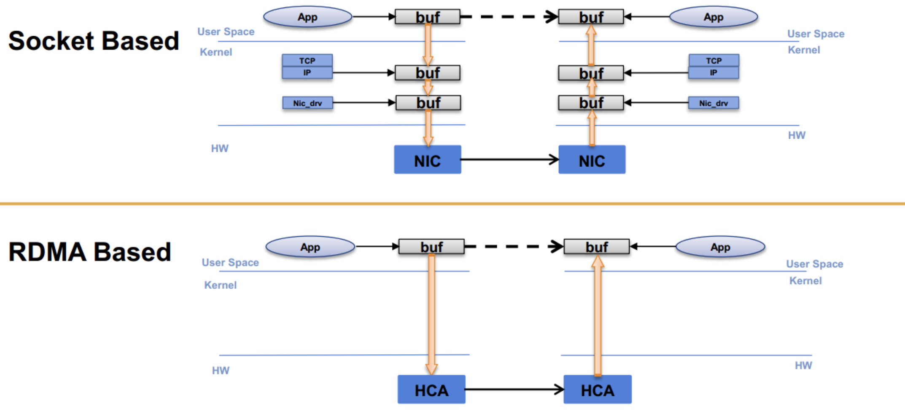

2021暑期实习总结
经历了一段比较无聊的暑期实习，目前已经跑路，总的来说对这段实习比较失望，来记录一下实习过程中学过的一些东西(都来源于网络公开内容，不属于公司内部资料)
实习笔记1：GPU的体系架构
在阿里云基础平台开发实习期间学习的一些笔记，当然处于保密性原则，这些笔记只包含网络中可以搜索的公开内容，不包含任何涉密信息。
GPU是图形处理单元(Graph Processing Unit)，一开始是为了绘制图形和渲染设计的，但是逐渐增加了很多新的功能，GPU是显卡最核心的组成部分，但是显卡还包括了很多其他的组成部分，比如散热器，通讯组件和各种接口。
GPU和CPU的异构计算
GPU需要和CPU进行协同工作，不能作为一个单独的计算平台来使用，可以看成是CPU的协处理器，因此所谓的GPU并行计算实际上是指CPU+GPU的异构计算架构，这种架构中CPU和GPU通过PCle总线进行连接并且CPU是host，而GPU是device，相比于CPU，GPU更加适合计算密集的任务，比如大型的矩阵运算，而CPU的运算核心比较少，但是可以实现复杂的逻辑运算，因此CPU适合做控制密集型的任务。

同时CPU上的线程是重量级的线程，上下文切换的过程开销比较大，而GPU中的线程是轻量级的线程，因此可以用CPU负责处理逻辑复杂的串行程序，而用GPU处理数据密集型的并行计算程序，互相取长补短。
GPU的体系架构
总体架构
一个典型的GPU由如下这些组件组成整体架构：

- PCI Express 3.0：GPU与CPU的连接总线，负责传输指令和数据
- Giga Thread Engine：负责将线程块Block分配给SM
- SM： Streaming Multiprocessors，流多处理器，负责执行Block
- L2 Cache：二级缓存
- Memory Controller：内存控制器，负责访问显存
- Memory 显存(内存)
- High Speed Hub：HSHUB，高速集线器，负责GPU间的内存访问
- NVLink：GPU间的高速互联接口
流多处理器架构
每个流多处理器(SM)其实都像一个小型的计算机，并且组合成了一个计算集群，首先由CPU通过PCIE总线将任务传递给Giga线程引擎，然后引擎将任务进行分解并传递到每个SM上面，而SM的组成部分如下图所示：

- Instruction Cache：指令缓存
- Warp Scheduler：线程束调度器，包含了数十个Core，每个Core都可以执行一个线程
- Dispatch Unit：指令分发器，根据Warp Scheduler的调度向核心发送指令
- Register File：寄存器
- Core：计算核心，负责浮点数和整数的计算
- DP Unit：双精度浮点数计算单元
- SFU：Special Function Units，特殊函数计算单元
- LD/ST：访存单元
- L1：一级缓存
- Shared Memcoy：共享内存
每个流多处理器接到任务之后，会由Warp Scheduler对其进行进一步的分解，并由Core来执行细分之后的任务。
GPU计算的层级化结构
因此GPU的计算结构实际上分成了三层，即Device—SM—Core，整个GPU就是一个设备，包含了众多的SM，而每个SM里面又有多个core，这也和CUDA的任务分配相对应，CUDA将任务分成三个层级，分别是Grid—Block和Thread，每个GPU执行一个对应的Grid，而每个SM执行一个block(也叫做线程块)，每个core负责执行一个对应的thread

而各个SM之间只能通过全局内存间接通信，没有其它互联通道，所以GPU只适合进行纯并行化计算。如果在计算过程中每个SM之间还需要通信，则整体运行效率很低。
关于GPU的核心问题
如何与CPU协同工作
CPU和GPU通过内存映射IO(Memory-Mapped IO)进行的，CPU通过MMIO访问GPU的寄存器状态，任何的命令的批示CPU发出，然后被提交到GPU

GPU的存储架构
GPU中的存储结构最多可以分为五层，分别是寄存器，L1缓存(SM中)，L2缓存(GPU上面)，GPU显存，系统的显存，其存取速度依次变慢。
SIMD和SIMT
SIMD是单指令多数据，SIMT是单指令多线程，是SIMD的升级版，可以对GPU中的单个SM的多个Core同时处理同一个指令，并且每个Core存取的数据可以是不同的，这是的SIMD的运算单元可以被充分利用。
CUDA编程模型
在CUDA中，host和device是两个重要的概念，我们用host指代CPU及其内存，而用device指代GPU及其内存。CUDA程序中既包含host程序，又包含device程序，它们分别在CPU和GPU上运行。同时，host与device之间可以进行通信，这样它们之间可以进行数据拷贝。典型的CUDA程序的执行流程如下：
- 分配host内存，并进行数据初始化
- 分配device内存，并从host将数据拷贝到device上
- 调用CUDA的核函数在device上完成指定的运算
- 将device上的运算结果拷贝到host上
- 释放device和host上分配的内存
实习笔记02：CUDA编程模型
阅读CUDA Programming Guide官方文档的过程中做的一些笔记。
CUDA编程模型
在有了多核的CPU和GPU之后，编程的挑战就变成了构建一个可以根据处理器数量自由地扩展其并行性的应用程序。而CUDA为了解决这个问题，对并行编程做出了三个关键的抽象，包括线程组，共享内存和障碍同步，并将这些特性作为编程语言的借口暴露给开发者供其使用。
这些抽象提供了细粒度的数据并行和线程并行，并且引导程序猿将问题分解成若干个粗粒度的，可以用若干个线程独立解决的子问题，并且将每个子问题分解成可以在一个线程块中并行完成的子任务。同时开发者不需要在意到底有多少个GPU，物理意义上的多处理器数量只需要让运行时系统掌握并进行调度集合，比如说同样是8个Block的线程，在面对不同SM个数的GPU时候的表现如下：

如果一个GPU的SM数量多，对于同一个任务的处理就会更快。
Kernel
CUDA C++可以让开饭着定义kernel函数，当调用kernel函数的时候会由N个CUDA线程并行执行N次，定义kernel函数需要有__global__关键字并且在调用这个kernel函数的时候要用<<<...>>>来指定调用这个函数的时候需要并发执行的线程数，每个执行这个函数的线程都会有一个专门的id存储在内置变量threadIdx中，比如下面这段代码可以进行向量的加法计算：
1 | __global__ void VecAdd(Float *A, Float *B, Float *C) { |
- 这种调用方式使用了N个线程，每个线程给N维向量的一个维度进行相加
Thread
为了方便，threadIdx是一个有三个元素的结构体(文档中说是3-component vector)，这样一来线程就可以用一维，二维和三维的索引进行表示，这样就能更好的支持向量，矩阵和张量等运算，这些一维，二维和三维的线程索引可以对应到一维，二维和三位的线程块，比如下面这样一段矩阵相加的代码就用了二维的索引：
1 | __global__ void MatAdd(float A[N][N], float B[N][N], |
- 当然每个block里面线程的个数是有上限的，一般是1024个，这是因为一个block的线程必须被放在一个处理器核中执行，并且必须共享有限的内存和系统资源
- 一个kernel函数可以被多个线程块执行，因此可以通过增加block数的方式增加threads数
- 同时block还可以用一维，二维，三维的方式组织起来，形成网格(Grid)，同时一个Grid中每个block还有一个对应的
blockIdx和blockDim分别表示block的索引和维度，同样也是3-component的

- 下面给出一个用多个block实现的矩阵加法的代码：
1 | __global__ void MatAdd(float A[N][N], float B[N][N], |
但是线程块必须要能够独立地执行，并且任意改变执行的顺序不能影响运算的结果。一个block内的线程需要通过共享内存来共享一些数据，并且需要对内存的访问进行同步，因此CUDA提供了共享内存和__syncthreads
Memory
CUDA线程可以执行的过程中可以访问多个内存空间中的数据，每个线程有一个私有的局部内存空间，每个block内有可以共享的存储空间。
用户态文件系统FUSE
FUSE文件系统
我们都知道一般的操作系统可以分为用户态和内核态两种mode，用户态的程序在用户栈中执行，而内核态的程序在操作系统的内核中执行，内核态可以执行很多用户态不能执行的指令，并且可以掌管整个计算机的资源。用户态可以通过系统调用切换到内核态，比如打开一个文件，我们需要调用用户态的打开文件的api，然后这个api会进行系统调用切换到内核态并调用内核态的打开文件api来打开一个文件。
而用户态的文件系统，就是说是指一个文件系统的data和metadata都是由用户态的进程提供的(这种进程被称为是daemon)，对于微内核的操作系统来说实现一个用户态文件系统没啥问题，但是对于宏内核架构的Linux架构来说有着不同的意义。用户态文件系统不代表其完全不需要内核的参与，因为在Linux中，对文件的访问都是统一通过VFS层提供的内核接口进行的（比如open/read），因此当一个进程（称为”user”）访问由daemon实现的文件系统时，依然需要途径VFS。Linux中实现了FUSE(File system in User Space)
事实上这个过程变成了VFS收到用户的文件操作请求之后，将这些请求转接到了Linux Kernel中的FUSE模块中，再让这个模块将请求按照指定的协议格式传递给用户态中的文件系统管理模块FUSE，然后由FUSE进行文件系统的请求的响应。

简单来说FUSE文件系统实际上就是实现了一个对文件系统访问的回调，整个系统分成用户态的库和内核态的库两个部分。用户态的库是提供给开发者的一些借口，我们可以通过这些接口将文件注册到FUSE中，内核态模块是具体的数据流程的功能实现，可以截获文件的访问请求，然后调用用户态注册的函数进行处理。
libfuse
libfuse是一个实现了Linux FUSE系统的开源项目，其中FUSE的内核代码在Linux Kernel的仓库中维护，而用户态的库在这个仓库中进行维护，这个用户态的库提供了挂起/卸载文件系统、从内核中读取请求并且发送回复等功能。

同时linfuse提供了高级和低级两套api系统，高级api是同步的，低级的api是异步的，但是二者都使用了回调的方式将内核发送过来的请求传递到了主程序中，当使用高级api的时候这些回调通过文件名和路径来执行，并且在回调函数返回的时候结束一个请求的处理过程，而低级api往往是通过inode来调用并且必须用一些独立的api函数来显式地进行返回。
系统调用拦截(Syscall Intercept)
libsyscall_intercept是一个开源的系统调用拦截库，提供了一个低层级的接口用于在用户空间中阻断系统调用。这个过程是通过对进程内存中的机器代码打上热补丁的方式进行了，同时这个库还停工了在用户空间实现几乎所有系统调用的功能，并且api比较简单，形式如下：
1 | int (*intercept_hook_point)(long syscall_number, |
这实际上是一个回调函数的形式，用户可以用libsyscall_intercept库来调用这个回调函数，并且有非零的返回值来表示系统调用没有被拦截并且需要被执行，如果返回值是0那么就表明这个系统调用被拦截了，并且系统调用的结果会存储在result指针中，并且被拦截的系统调用由libsyscall_intercept来进行执行。
系统调用拦截让我们可以自定义一些底层的操作并加快系统调用api的执行，因为完整执行一个系统调用涉及到内核态和用户态的切换，会消耗大量的时间，如果我们在用户态实现了自定义的系统调用就可以达到加速的目的。
实习笔记04：RDMA通信协议
背景
传统的TCP/IP技术在处理数据包的过程中需要经过操作系统和其他软件层，占用了大量的服务器资源和内存总线带宽，数据在系统内存，处理器缓存和网络控制器的缓存之间反复移动，给服务器的内存和CPU带来了大量的负担，加剧了网络的延迟效应。
远程内存直接访问(RDMA)重点解决了这种网络带宽，处理器速度和内存带宽之间的mismatch问题，用于高性能计算集群的互联，这是一种新型的内存访问技术，可以让计算机直接存取和访问其他计算机的内容，并且不需要经过CPU的处理，可以直接将数据从一个系统快速移动到远程系统的存储器中而不对操作系统造成任何影响。
Socket通信的数据需要经过Socket，TCP，IP，网络设备等多个层级之后才能到达设备驱动器中，而RDMA可以直接访问远端计算机的设备驱动器进行内存的读写。

RDMA的传输方式分类
RDMA的传输方式可以分成可信的和不可信的，其中可信的方式中NIC网卡使用确认的形式来保证消息的按顺序传递，而不可信的传输方式中不会进行确认。也可以分成有连接和无连接的两种，有连接的传输需要维护队列对的数据结构并进行一对一的通信，而无连接的通信方式可以进行一对多的通信。
RDMA支持可信有连接，不可信有连接和不可信无连接三种大的通信方式，可以执行的操作包括收发，写和读等等，其中可信有连接的通信支持所有操作，而不可信连接不能进行读，不可信无连接只支持收发操作。